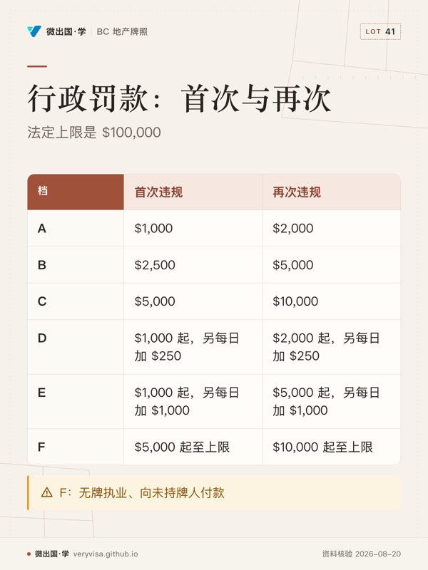

🃏 Flashcards · 3 闪卡 · 3 张 🖼 Slides · 2 幻灯 · 2 页 ✍️ Questions · 13 刷题 · 13 道
RESA 监管·职业责任·伦理 licensing-conduct P1 必拿分 P1 Must score
ZH EN ZH + EN
先看这一章怎么考 First, how this chapter is tested
机构权限辨析题：给你地产局纪律委员会与省监管方，考谁能对会籍停权或开除、谁能暂停或吊销牌照（考场上按考试口径认准地产局不能吊牌，同时留意现行监管方已并入 BCFSA）。 Institutional authority analysis: Given the discipline committee of a real estate board versus the provincial regulator, testing who can suspend or expel from membership and who can suspend or cancel a licence (answering under the exam benchmark that a real estate board cannot suspend or cancel a licence, while noting that current regulators have merged into BCFSA). 利益冲突与不具名买家情景题：描述持牌人或其关系人参与买卖，或买家要求对卖方隐瞒身份（如隔壁地块整合），考你是否履行完整书面披露（full disclosure）及向客户披露重大信息。 Conflict of interest and undisclosed buyer scenarios: Describing situations where a licensee or associate participates in a trade, or where a buyer requests that their identity be concealed from the seller (such as in an adjacent lot assembly), testing whether you give full written disclosure and disclose material information to your client. 双重代理与指定代理边界题：给出同一家经纪行两名指定代理分别代表买卖双方，或同一名持牌人手握两位竞争同一套房的买家，考你区分合法的指定代理（designated agency）与被禁的双重代理（dual agency）。 Dual agency versus designated agency boundaries: Describing two designated agents from the same brokerage representing the seller and buyer separately, or a single licensee representing two competing buyers for the same property, testing your ability to distinguish lawful designated agency from prohibited dual agency. 最常丢分的陷阱（看到题干信号就警觉） Traps that cost the most marks (watch for the signal in the stem)
自律与法定权限混同 Confusing self-regulatory authority with statutory authority 题干出现 discipline committee of a real estate board、suspend or cancel a licence 或 comparing the REALTOR® Code with RESA/Rules。 The question stem mentions the discipline committee of a real estate board, suspending or cancelling a licence, or comparing the REALTOR® Code with RESA/Rules. 盲从客户非法指示 Blindly following unlawful client instructions 题干出现 seller instructs the licensee not to mention、unpermitted renovation、municipal notice to correct 或 latent defect。 The question stem mentions the seller instructing the licensee not to disclose, an unpermitted renovation, a municipal notice to correct, or a latent defect. 指定代理误判为双重代理 Misidentifying designated agency as dual agency 题干出现 two designated agents at the same brokerage 或 one licensee representing two competing buyers for the same property。 The question stem mentions two designated agents at the same brokerage or one licensee representing two competing buyers for the same property. 本章考点页：导图、要点表、7 道带逐项解析的练习 →
本章地位 ：伦理章是整个牌照体系里最容易被读成「说教」的一章，也是最不该被这么读的一章。
核实日期：2026-09-05 ，所有条号回读 BC Laws 现行文本（Rules 与 RESA 均 current to 2026-09-01），出处见文末源表。
一、先把这一章的骨架换掉：BC 的伦理有两条线，不是一条 本节回答 This section answers 法定线与自律线分别管谁、由谁执法、冲突时听谁的 Explains who the statutory and self-regulatory tracks govern, who enforces each, and which takes precedence in a conflict.
大多数中文攻略讲 BC 地产伦理时只讲一件事：加拿大地产协会（CREA）的 REALTOR® Code（地产经纪守则） 。考试口径的这一章也是这么组织的——用一部会员守则的条文来讲整个行业的职业伦理。
图：BC 地产伦理两条线——法定线人人适用，自律线只管会员
这个结构在 2026 年已经站不住了，原因不是守则变了（它确实也变了），而是BC 把当年只写在守则里的东西，搬进了有罚款的法规 。今天你要同时看两条线：
一句话记住两条线的关系 ：CREA 官方的表述是，守则设定的义务可以高于法律 ，但守则与法律冲突时以法律为准 （见文末源表第 14 条）。所以自律线是法定线的加码 ，永远不是它的替代。
⚠️
「伦理」不等于「没有法律后果」
考试口径这一章的论证起点是：法律不可能穷尽所有伤害他人的行为，所以需要一部道德守则来补位。
这个说法本身没错，但在 2026 年的 BC，它会把读者引向一个致命误解——
以为「不诚实」「利益冲突没说」只是道德问题。现行 Rules 把诚实（s. 33）、
谨慎与技能（s. 34）、回避与披露利益冲突（s. 30(i)(j)）直接写成了法定义务 ，
违反是 professional misconduct（专业不当行为），可以直接罚到钱、停到牌。
节末检索小测 · 先别往回翻，凭记忆作答 Quick recall check: answer from memory before scrolling back
Marcus holds a BC trading services licence but has chosen not to join the Canadian Real Estate Association (CREA) or any local real estate board. When Marcus provides real estate services to a seller, which ethical and regulatory framework governs his conduct?
Marcus 持有 BC 省交易服务牌照，但选择不加入加拿大地产协会（CREA）或任何本地地产局。当 Marcus 为卖方提供地产服务时，哪一套伦理与监管框架管辖他的行为？
a He is governed solely by the REALTOR® Code because it sets the universal ethical baseline for all licence holders in Canada. ✗ 落入「自律与法定权限混同」陷阱。地产经纪守则（REALTOR® Code）属于自律线，只约束自愿加入的加拿大地产协会（CREA）会员，并不适用于未入会的持牌人。 Falls into the trap of confusing self-regulatory with statutory authority. The REALTOR® Code is a self-regulatory code that binds only voluntary members of CREA and does not apply to non-member licensees.
b He is bound by RESA and the Rules, which BCFSA enforces against every licensee whether or not they belong to a board. ✓ 正确。BC 地产伦理的法定线由《地产服务法》（RESA）与《地产服务规则》（Real Estate Services Rules）构成，由 BC 金融服务管理局（BCFSA）执法，覆盖每一个持牌人（every licensee），无论其是否为 REALTOR®。 Correct. The statutory track in BC real estate ethics consists of the Real Estate Services Act (RESA) and the Real Estate Services Rules, enforced by BCFSA, which govern every single licensee regardless of whether they belong to CREA or a real estate board.
c He operates outside statutory conduct rules until he voluntarily signs a compliance undertaking with the local real estate board. ✗ 落入「自律与法定权限混同」陷阱。法定线是强制性的，只要持有牌照就自动受《地产服务法》（RESA）与 Rules 约束，不需要跟本地地产局签自愿承诺。 Falls into the trap of confusing statutory duties with voluntary agreements. The statutory track is mandatory; holding a real estate licence automatically subjects a licensee to RESA and the Rules without requiring any voluntary agreement with a local board.
d He is subject to both the REALTOR® Code and RESA, and where the two conflict, the stricter provisions of the REALTOR® Code override the statute. ✗ 落入「自律与法定权限混同」陷阱。首先 Marcus 不是会员不受守则管辖；其次即便对会员而言，守则义务虽可高于法律，但与法律冲突时永远以法律为准（the law prevails）。 Falls into the priority and jurisdiction trap. Marcus is not a CREA member and thus is not subject to the Code; furthermore, even for members, while Code duties can exceed statutory requirements, where the Code and the law conflict, the law always prevails.
看答案与每个选项的解析 Show the answer and why each option is right or wrong 答案 Answer ：b
二、考试口径（©2020）vs 2026 现行：八处错位 本节回答 This section answers 考试资料旧口径与现行制度在八个高频考点上的差异 Explains the differences between the older course manual benchmark and the current regulatory system across eight high-frequency exam topics. 本章考题 1 Question 1
✕
第 1、2 两条是全章最贵的
卷面上答「地产局纪律委员会不能吊牌，只有监管方能」——这句话的结构 至今成立，
所以考试口径没变；但把机构名答成 Real Estate Council 就是答一个 2021 年就解散的机构。
在真客户面前引用「Real Estate Council」，等于告诉对方你的知识停在五年前。
节末检索小测 · 先别往回翻，凭记忆作答 Quick recall check: answer from memory before scrolling back
According to the course manual, the Standards of Business Practice in the REALTOR® Code contain 28 articles. How does the current version of the REALTOR® Code compare to the manual's description?
根据课程考试口径，REALTOR® Code 中的业务操守准则（Standards of Business Practice）共有 28 条。现行版本的 REALTOR® Code 与考试资料描述相比有何变化？
a It now contains 30 articles, having added an article binding REALTORS® acting as principals and an article establishing a duty of cooperation. ✓ 正确。考试口径为 28 条（2009-07-01 版），而现行业务操守准则（Standards of Business Practice）已扩充为 30 条：新增了第 29 条（以本人身份 principal 交易时仍受守则约束）和第 30 条（合作义务 duty of cooperation）。 Correct. The exam benchmark reflects 28 articles (from the 2009 version), whereas the current Standards of Business Practice have expanded to 30 articles, adding Article 29 (acting as a principal remains subject to the Code) and Article 30 (duty of cooperation).
b It was reduced to 20 articles after statutory duties under the Real Estate Services Rules replaced all conflict-of-interest provisions. ✗ 编造数字陷阱。守则并没有因为法定规则的出台而缩减到 20 条，而是从考试口径的 28 条增加到了现行的 30 条。 Fabricates an arbitrary number. The Code was not reduced to 20 articles following the enactment of provincial rules, but expanded from the exam benchmark's 28 articles to 30 articles.
c It still contains exactly 28 articles, because CREA froze all amendments when BCFSA assumed single-regulator authority in 2021. ✗ 时效错位陷阱。考试卷面若按旧考试资料问条数答 28 条，但现行守则在 2023 年会通过第 30 条后已变为 30 条，并未在 2021 年冻结修订。 Falls into the timeline trap. While the exam benchmark tests 28 articles based on the course manual, the current Code expanded to 30 articles following the adoption of Article 30 in 2023 and was not frozen in 2021.
d It has been replaced entirely by BCFSA's standalone Code of Ethics manual, which all licensees must sign every two years. ✗ 概念混淆陷阱。BC 金融服务管理局（BCFSA）不发布独立的伦理守则文件，且 CREA 的 REALTOR® Code 依然有效并管辖会员。 Confuses regulatory instruments. BCFSA does not publish an independent ethical code document, and CREA's REALTOR® Code remains active and binding upon its members.
看答案与每个选项的解析 Show the answer and why each option is right or wrong 答案 Answer ：a
三、法定线的核心：Rules 第 3 部分那十条义务 本节回答 This section answers 持牌人十项法定客户义务与不可协议排除的三条铁底 Explains a licensee's ten statutory client duties and the three fundamental duties that can never be modified or excluded by agreement. 本章考题 2 Question 2
现行 Rules 的 Part 3（持牌人一般责任） 是这门课伦理部分的宪法。它只有七条（s. 28–34），但 s. 30 一条里就装了十项义务：
s. 30 —— 客户聘用经纪行后，经纪行及其关联持牌人必须：
(a) 以客户的最佳利益 行事；
(b) 按客户的合法 指示行事；
(c) 只在客户授权的范围内 行事；
(d) 遇到超出自己专业范围的事，建议客户另找独立专业意见 ；
(e) 对客户信息保密 ；
(f) 向客户披露所有已知的重大信息 ；
(g) 及时、客观、无偏向 地把每一个 offer 转达客户；
(h) 对客户考虑购入的物业，用合理努力去发现相关事实 ；
(i) 采取合理步骤回避任何利益冲突 ；
(j) 冲突确实存在时，立即完整地书面披露 ，且这份披露必须与服务协议、与交易文件分开 成为独立文件。
另外三条各管一件事：s. 33 —— 提供地产服务时必须诚实行事 ；s. 34 —— 必须以合理的谨慎与技能行事 ；s. 28/s. 29 —— 管理经纪的监督责任与代表的报告责任 。
ℹ️
第 (j) 项那个「分开」是有来历的
冲突披露不能夹在服务协议或买卖合同里，必须是一张单独的纸。
理由很直白：夹在长文件里的披露，客户签了也没看见——而法律要的是他真的知道 。
考试口径讲的「full disclosure（完整披露）」是原则；这条是原则被写成可执法形态之后的样子。
s. 31 与 s. 32：义务可以被改小，但有三条铁底
s. 30 的义务可以由经纪行与客户约定修改或排除 （s. 31），也可以通过指定代理（designated agency） 把义务收窄到某一两名指定持牌人身上（s. 32）——这是 BC 绝大多数经纪行的日常做法。
但无论怎么改，三件事永远改不掉 ：
经纪行仍须监督 其持牌人履行 s. 30 的义务；
除非客户授权或法律要求，不得向任何人泄露客户的机密信息 ；
采用指定代理的经纪行，须对所有客户的利益一视同仁、客观公正 （s. 32(4)(c)）。
节末检索小测 · 先别往回翻，凭记忆作答 Quick recall check: answer from memory before scrolling back
A brokerage and its client sign a written service agreement under s. 31 of the Real Estate Services Rules that modifies several standard duties listed in s. 30, and the brokerage also practices designated agency under s. 32. Which of the following duties can NEVER be waived or excluded by agreement?
某经纪行与客户根据《地产服务规则》第 31 条签署书面服务协议，修改了第 30 条列出的若干常规义务，且该经纪行依第 32 条实行指定代理。下列哪一项义务永远不得通过协议放弃或排除？
a The duty to make reasonable efforts to find out facts relevant to any property the client is thinking of buying. ✗ 边界混淆陷阱。合理努力发现相关事实属于 s. 30(h) 的常规义务，可以通过 s. 31 由经纪行与客户书面约定修改或排除，不属于三条铁底。 Confuses standard duties with non-waivable duties. Using reasonable efforts to discover relevant facts is a standard duty under s. 30(h) that can be modified or excluded by written agreement under s. 31, and is not one of the three non-waivable duties.
b The duty to pass every offer on to the client promptly, objectively and without bias, with no exception. ✗ 边界混淆陷阱。转达要约属于 s. 30(g) 的义务，在特定协议安排下可依 s. 31 修改，不在 s. 31 与 s. 32 规定的三条不可修改铁底之内。 Confuses standard duties with non-waivable duties. Presenting offers is a duty under s. 30(g) that may be modified under s. 31 (such as in mere posting agreements), and is not protected by the non-waivable statutory floor.
c The duty not to reveal the client's confidential information to anyone unless the client allows it or law requires it. ✓ 正确。无论依 s. 31 修改义务还是依 s. 32 采用指定代理（designated agency），有三件事永远改不掉：经纪行的监督责任、除非客户授权或法律要求不得泄露客户机密信息（confidential information），以及对所有客户利益一视同仁、客观公正。 Correct. Whether modifying duties under s. 31 or practicing designated agency under s. 32, three fundamental duties can never be modified or excluded: the brokerage's supervisory obligations, the duty not to disclose confidential information without consent or legal requirement, and the duty to treat all clients impartially.
d The duty to recommend that the client get independent expert advice on issues beyond the licensee's own expertise. ✗ 边界混淆陷阱。建议寻求独立专业意见属于 s. 30(d)，并非 s. 31/s. 32 明文锁死的三条不可排除铁底之一。 Confuses standard duties with non-waivable duties. Advising clients to seek independent professional advice is a standard duty under s. 30(d) rather than one of the three statutory non-waivable duties locked in by sections 31 and 32.
看答案与每个选项的解析 Show the answer and why each option is right or wrong 答案 Answer ：c
四、利益冲突：从「说一声」到「用监管方的表格说」 本节回答 This section answers 持牌人或关系人买卖物业时核准表格的披露时点与法定内容 Explains the disclosure timing and statutory contents of approved forms when licensees or associates acquire or dispose of real estate. 本章考题 3 Question 3
考试口径这一章讲利益冲突讲得很好，六个元素、若干判例式的例子，原理长青 。变的是执行形态。
自己（或关系人）买、自己（或关系人）卖 ：Rules s. 53 要求在任何买卖协议签订之前、立即 用 superintendent 核准的表格向对方披露，内容清单是法定的，包括：披露对象姓名、物业法律描述与街址、你是持牌人这一事实、关系人与你的关系、预期能拿到的报酬或款项 、以及买入方是自用/出租还是转售 ——如果是转售且你已在谈转售，转售的条款也要写进去 。
🔧
「我只是帮我太太买」不是豁免
Rules s. 53 覆盖的是 associate（关系人）——只要你在为关系人提供地产服务，同一套披露照做。
唯一那条小豁免是自住短租（≤1 年、无购买选择权、无优先购买权），跟买卖没关系。
另有一条容易被误引：s. 97 允许持牌人在不作为持牌人 的情况下自买自卖，
但它只适用于仅持有出租物业管理或共管物业管理牌照的人 ——
做买卖代理（trading services）的人不在这条的射程里。
守则那一侧同步收紧了：现行第 11.5 条 只有一句话——存疑就披露 ；现行第 29 条 明确 REALTOR® 以本人身份（principal）交易时照样受守则全部义务约束 ，这一条在考试口径那一版里还不存在。
节末检索小测 · 先别往回翻，凭记忆作答 Quick recall check: answer from memory before scrolling back
Nadia, a trading services representative, is helping her husband purchase a townhome listed by another brokerage. They plan to renovate the unit and resell it within six months, and her husband is already negotiating resale terms with a prospective buyer. Under s. 53 of the Real Estate Services Rules, what must Nadia do?
持有交易服务代表牌照的 Nadia 正在帮丈夫购买一套由别家经纪行挂牌的联排别墅。他们计划翻新后在六个月内转售，且丈夫已经在与潜在买家商谈转售条款。根据《地产服务规则》第 53 条，Nadia 必须怎么做？
a Nothing, because she is not acquiring title in her own name and the property is listed by a different brokerage. ✗ 落入「关系人或夹带披露豁免幻觉」陷阱。Rules s. 53 覆盖关系人（associate），帮配偶买房必须按同一套规则作交易中的利益披露（disclosure of interest in trade）。 Falls into the associate exemption trap. Rules s. 53 explicitly covers associates (including spouses); assisting a spouse to purchase property triggers the identical disclosure of interest in trade requirements.
b Insert a one-line clause in the Contract of Purchase and Sale stating that the buyer's spouse holds a real estate licence. ✗ 落入「关系人或夹带披露豁免幻觉」陷阱。s. 30(j) 与 s. 53 要求使用 superintendent 核准的独立表格，不能只在买卖合同里夹带一行字。 Falls into the embedded clause trap. Sections 30(j) and 53 strictly mandate disclosure on a separate superintendent-approved form rather than inserting an informal clause within the purchase contract.
c Rely on the s. 97 exemption for licensees trading on their own behalf, provided she waives her share of the buyer agency commission. ✗ 条文误引陷阱。s. 97 只适用于仅持有出租物业管理或共管物业管理牌照（rental or strata management only）的人，做买卖代理（trading services）的持牌人不在该豁免射程内。 Misapplies statutory exemptions. Section 97 applies only to licensees licensed exclusively for rental property management or strata management, and does not exempt trading services representatives.
d Before any agreement, promptly give an approved-form disclosure of her licensee status, relationship, expected pay, resale plan and resale terms. ✓ 正确。Rules s. 53 要求在任何协议签订前立即用 superintendent 核准表格作交易中的利益披露（disclosure of interest in trade），法定内容包括持牌人身份、与关系人的关系、预期报酬、自用还是转售，以及若已在谈转售时的转售条款。 Correct. Rules s. 53 requires prompt disclosure on a superintendent-approved form before any agreement is entered into, specifying licensee status, the relationship to the associate, expected remuneration, whether the property is for personal use or resale, and the terms of any negotiated resale.
看答案与每个选项的解析 Show the answer and why each option is right or wrong 答案 Answer ：d
五、双重代理：不再是「披露就行」的冲突 本节回答 This section answers 双重代理禁令、偏远地区唯一例外及指定代理的合法边界 Explains the prohibition on dual agency, the remote location exception, and the lawful boundaries of designated agency. 本章考题 4 Question 4
这是考试口径这一章与现行制度差得最远的一格。考试口径用「不具名买家（undisclosed purchaser）」那个经典场景来讲冲突：买家要求不透露身份，持牌人夹在中间。考试口径的结论是——必须向客户披露 。
结论没错，但 2026 年 BC 的制度已经走到前面一步：冲突到了「同时代表两方」的程度时，披露不再是出路，退出才是。
s. 63(1)：经纪行不得从事双重代理。 定义覆盖买卖双方、出租与承租双方、转让与受让双方，以及两个或以上利益冲突的买家 。s. 64：唯一例外 ——物业位于持牌人服务不足的偏远地区、双方各请一名持牌人不切实际。走这条要：管理经纪签字说明为什么适用、用核准表格披露双重代理的义务与风险、与每一方签书面协议，并在签约后立即把披露件报给 superintendent 。s. 65：一般情形下的两条路 ——要么这笔交易谁都不代表 ，要么只留下一方 。留一方必须先拿到全部客户 的书面同意，且那份核准表格里必须写明：冲突是什么、被终止代理的一方将失去哪些义务、你仍持有他的机密信息且被禁止泄露 、以及因此你能给留下那一方的建议也会受限 、并建议双方各自寻求独立专业意见。
⚠️
「指定代理」不是「双重代理」，但可能变成
同一家经纪行的两名指定代理分别代表买卖双方——这不构成 双重代理（s. 63(2)）。
变成双重代理的是同一名指定代理同时代表两方 。这条界线是 BC 制度的枢纽，
考场上问法通常是「同一 brokerage 的两个 licensee 分别代表买卖双方，是否违规」，答不违规 。
节末检索小测 · 先别往回翻，凭记忆作答 Quick recall check: answer from memory before scrolling back
At a residential brokerage, managing broker Owen assigns designated agent Priya to represent the seller of a residential property and designated agent Quentin to represent a buyer making an offer on that same property. Under s. 63 of the Real Estate Services Rules, how is this arrangement classified?
在某住宅经纪行，管理经纪 Owen 指派指定代理 Priya 代表一套住宅物业的卖方，并指派指定代理 Quentin 代表对该物业出价的买方。根据《地产服务规则》第 63 条，这一安排属于什么性质？
a It does not constitute dual agency because two different designated agents at the same brokerage are representing the seller and the buyer separately. ✓ 正确。根据 Rules s. 63(2)，同一家经纪行的两名指定代理（designated agents）分别代表买卖双方，不构成双重代理（dual agency），在 BC 属于合法的日常操作；只有同一名指定代理同时代表两方才会变成双重代理。 Correct. Under Rules s. 63(2), two designated agents from the same brokerage representing the seller and buyer respectively does not constitute dual agency; it is a standard lawful practice in BC, and dual agency arises only when a single designated agent attempts to represent both parties.
b It is illegal dual agency unless the property is located in a remote, underserved location and reported to the superintendent under s. 64. ✗ 落入「指定代理误判为双重代理」陷阱。两名不同的指定代理分别代表买卖双方根本不是双重代理，无需动用 s. 64 的偏远地区例外。 Falls into the trap of confusing designated agency with dual agency. Having two separate designated agents represent buyer and seller is not dual agency and does not require invoking the remote location exemption under s. 64.
c It is permissible only if Owen steps in to act as sole dual agent for both parties and obtains their written consent. ✗ 落入「指定代理误判为双重代理」陷阱。让 Owen 一个人同时代表双方反而真成了被 s. 63(1) 禁止的双重代理。 Falls into the prohibited dual agency trap. Having managing broker Owen step in to represent both parties would create the exact prohibited dual agency banned under s. 63(1).
d It violates s. 65 unless one of the parties agrees to be treated as an unrepresented party before the offer is drafted. ✗ 落入「指定代理误判为双重代理」陷阱。既然由两名不同的指定代理各自代表一方，就不存在同一持牌人代表多方客户的冲突，不必把其中一方降为无代理方（unrepresented party）。 Falls into the unrepresented party trap. Because two independent designated agents represent each party separately, no client conflict exists for either agent, making it unnecessary to reduce either client to an unrepresented party.
看答案与每个选项的解析 Show the answer and why each option is right or wrong 答案 Answer ：a
六、重大隐蔽缺陷：唯一一条要求你「停止服务」的伦理规则 本节回答 This section answers 重大隐蔽缺陷的法定定义、披露时点及卖方已书面披露时的例外 Explains the statutory definition of material latent defects, disclosure timing, and the exception when the seller has disclosed in writing. 本章考题 5 Question 5
Rules s. 59 给 material latent defect（重大隐蔽缺陷） 下了法定定义：合理查验发现不了的重大缺陷，包括——使物业危险或潜在危险 、不宜居住 、不适合对方已告知的用途 ；修复代价巨大 ；地方政府已发出须整改的通知 ；以及缺少应有的建筑等许可 。
义务本身：为卖方 提供交易服务的持牌人，必须在任何买卖协议订立之前，向交易的所有其他方 披露自己已知的重大隐蔽缺陷（s. 59(2)）。
而 s. 59(3) 是考试口径完全没有的一句，也是整部 Rules 里语气最硬的一条之一：客户指示你不要披露，你必须拒绝在这笔交易里继续为他提供交易服务。
✕
这一条同时推翻了「服从客户指示」
s. 30(b) 要你按客户指示行事，但那里写的是「合法 指示」。
客户叫你隐瞒重大隐蔽缺陷，那不是一个你可以权衡的两难——法律已经替你选好了 ：
停止服务。考试口径里「follow the client's instructions（服从客户指示）」那一节，
在 BC 必须连着这一条一起读。
已经披露过的除外：卖方本人已经书面告知对方的，你不必再披露一次（s. 59(4)）。
节末检索小测 · 先别往回翻，凭记忆作答 Quick recall check: answer from memory before scrolling back
Listing representative Elena learns that her seller client's house has a structural foundation crack hidden behind finished drywall that makes the home potentially dangerous. Before any buyer makes an offer, the seller personally provides a full written disclosure of this defect to the prospective buyer. Under s. 59 of the Real Estate Services Rules, what is Elena's obligation?
挂牌代表 Elena 得知卖方客户的房屋在装修好的石膏板后方有一处结构性地基裂缝，使房屋存在潜在危险。在任何买家出价前，卖方本人已经将该缺陷完整地书面告知了潜在买家。根据《地产服务规则》第 59 条，Elena 的义务是什么？
a She must still refuse to continue providing trading services because a potentially dangerous property cannot be traded by a licensee. ✗ 条文过度延伸陷阱。Rules s. 59(3) 要求停止服务的前提是客户指示你不披露重大隐蔽缺陷（material latent defect）；只要依法披露，有缺陷的物业仍然可以交易。 Overextends statutory rules. Cessation of services under Rules s. 59(3) is triggered only if the client instructs the licensee not to disclose a material latent defect; as long as proper disclosure is made, the property can lawfully be sold.
b She need not repeat the disclosure, because the seller has already disclosed the defect in writing to the other party. ✓ 正确。虽然使物业危险或潜在危险的缺陷属于重大隐蔽缺陷（material latent defect），但根据 Rules s. 59(4)，如果卖方本人已经向对方书面告知（disclosed in writing），持牌人就不必再重复披露一次。 Correct. While defects rendering real estate dangerous or potentially dangerous are material latent defects, under Rules s. 59(4), if the seller client has already disclosed the defect in writing to the other party, the licensee is not required to make a duplicate disclosure.
c She must file an immediate report with the superintendent under s. 64 before the buyer signs the contract. ✗ 条文张冠李戴陷阱。向 superintendent 报备是 s. 64 偏远地区双重代理例外的要求，不是 s. 59 重大隐蔽缺陷的程序。 Mismatches statutory procedures. Reporting to the superintendent is a requirement under the s. 64 remote location dual agency exemption, not a procedure under s. 59 for material latent defects.
d She must keep the foundation crack confidential under s. 30(e) and ask the seller to withdraw the written statement. ✗ 落入「盲从客户非法指示」同类陷阱。重大隐蔽缺陷依法必须披露，绝不能以保密义务（confidentiality）为由要求撤回披露。 Falls into the duty of confidentiality misconception. Material latent defects must be disclosed by law, and a licensee can never cite confidentiality to suppress or retract written disclosure.
看答案与每个选项的解析 Show the answer and why each option is right or wrong 答案 Answer ：b
七、不歧视：法定线比守则宽 本节回答 This section answers 守则与人权法在公共服务和购房条款中受保护理由的差异 Explains the differences in protected grounds between the Code and the Human Rights Code across public services and property purchases.
考试口径引用守则第 16 条的理由清单：race（种族）、national or ethnic origin（民族或族裔出身）、religion（宗教）、colour（肤色）、sex（性别）、family status（家庭状况）、age（年龄）、sexual orientation（性取向）、marital status（婚姻状况）、disability（残疾）。
现行守则第 16 条在这个清单里加了 gender identity（性别认同） ，并在解释里要求会员遵守适用的人权法。
而 BC 的法定线更宽，也更细 ——《Human Rights Code》分了两条：
Indigenous identity 是 2021 年经 Bill 18 加进去的 （法案 2021-11-17 提交），考试口径定稿时还没有。
ℹ️
s. 8 与 s. 9 的差别是真实的，不是抄漏
两条的理由清单确实不同：家庭状况与年龄写在「服务」那一条里，没写在「购房」那一条里。
这不是让你在实务里去钻这个缝——你提供的地产服务本身永远落在 s. 8 之下 ，
该受的约束一条不少。它的意义在于：引用条文时不要张冠李戴。
节末检索小测 · 先别往回翻，凭记忆作答 Quick recall check: answer from memory before scrolling back
When comparing s. 8 (discrimination in accommodation, service and facility) and s. 9 (discrimination in purchase of property) of the BC Human Rights Code, which two protected grounds are included in s. 8 but omitted from s. 9?
对比 BC 省《人权法》（Human Rights Code）第 8 条（住宿、服务或设施中的歧视）与第 9 条（购买物业中的歧视），哪两项受保护理由包含在第 8 条中，但未写入第 9 条？
a Indigenous identity and gender identity or expression. ✗ 落入「人权保护理由与适用条文错位」陷阱。原住民身份（Indigenous identity）与性别认同或表达（gender identity or expression）在现行《Human Rights Code》的 s. 8 和 s. 9 中都包含。 Falls into the statutory cross-referencing trap. Indigenous identity and gender identity or expression are protected under both s. 8 and s. 9 of the current Human Rights Code.
b Religion and marital status. ✗ 落入「人权保护理由与适用条文错位」陷阱。宗教（religion）与婚姻状况（marital status）在 s. 8 与 s. 9 两条中均受保护。 Falls into the statutory cross-referencing trap. Religion and marital status are protected grounds under both s. 8 and s. 9.
c Family status and age. ✓ 正确。《Human Rights Code》s. 8（管面向公众提供的服务，地产服务本身落在此条）包含家庭状况（family status）与年龄（age），而 s. 9（管购买物业）的受保护理由清单中不含 family status 与 age。 Correct. BC Human Rights Code s. 8 (services customarily available to the public, including real estate brokerage services) protects family status and age, whereas s. 9 (purchase of real property) omits family status and age from its enumerated grounds.
d Physical or mental disability and sexual orientation. ✗ 落入「人权保护理由与适用条文错位」陷阱。身体或精神残疾（physical or mental disability）与性取向（sexual orientation）在 s. 8 和 s. 9 中都有列出。 Falls into the statutory cross-referencing trap. Physical or mental disability and sexual orientation are protected grounds under both s. 8 and s. 9.
看答案与每个选项的解析 Show the answer and why each option is right or wrong 答案 Answer ：c
八、广告与举报：两处「原理长青、执行换代」 本节回答 This section answers 家庭办公室与广告合规要求及向管理经纪举报的法定义务 Explains home office and advertising compliance rules, and the statutory duty to report misconduct to the managing broker.
广告 。考试口径列的四条实务要点（不得有歧视性表述、形容词不可当保证用、收入数字必须自己核实而不能只信卖方、不得雇未持牌人拉客）在原理上全部成立，现在它们背后各有一条法规：
s. 40 ：经纪行的持牌名必须显著易读 地出现；个人须用自己的持牌名（有个人地产公司的用公司名）；若列了办公地址，必须是关联经纪行办公室 的地址；团队广告必须标出团队名。s. 41 ：不得发布你知道或理应知道含虚假、误导性陈述或失实描述的地产广告。 s. 42 ：未经业主或其授权代理人同意，不得刊登某具体物业在售的广告。 s. 37 ：家庭办公室不得对外挂牌、电话不得以经纪行名义接听、地址不得出现在任何广告上。
举报 。考试口径的举报路径是「向地产局投诉」，那是自律线。法定线是这样的：
s. 29(5) ：代表或副经纪一旦知悉可能构成专业不当行为、有失体面的行为，或不当/疏忽行为 的情况，必须立即通知管理经纪 ——包括自己的 行为、自己雇员的行为，以及管理经纪依 s. 28(2) 负有责任的任何人的行为。s. 28(2) ：管理经纪知悉此类行为时，必须采取合理步骤处理 。BCFSA 的现行指引把两件事说得更明白：① 你还有一项伦理义务 ，把任何 地产从业者（包括别家经纪行的 ）的不当行为报给你的管理经纪；② 明知而不报，可能被认定为 conduct unbecoming（有失体面的行为）并受纪律处分 。
可以直接报给监管方的情形（BCFSA 明列）：行为对公众风险极大需要立即处理（例如挪用客户款项）、管理经纪一时联系不上而事态严重、你对管理经纪的处理方式有疑虑、不当行为的人就是管理经纪本人 ，或任何让你更愿意直接报给 BCFSA 的理由。BCFSA 另设匿名举报线 ，但匿名举报必须包含足以立案的信息。
节末检索小测 · 先别往回翻，凭记忆作答 Quick recall check: answer from memory before scrolling back
Representative Lucas works partly from a home office in his suburban residence and wants to print new marketing flyers. Under s. 37 and s. 40 of the Real Estate Services Rules, which of the following practices is permitted?
代表 Lucas 部分时间在郊区住宅的家庭办公室工作，并准备印制新的宣传单。根据《地产服务规则》第 37 条与第 40 条，下列哪一种做法是被允许的？
a Displaying his brokerage's licensed name in a prominent and easily readable manner while listing only his related brokerage office address. ✓ 正确。根据 Rules s. 40，广告中必须显著易读地（in a prominent and easily readable manner）标出经纪行的持牌名称，且若列出办公地址必须是关联经纪行办公室的地址；同时符合 s. 37 家庭办公室地址不得出现在任何广告上的规定。 Correct. Under Rules s. 40, an advertisement must prominently display the licensed name of the brokerage in an easily readable manner, and any business address listed must be the brokerage office; this also complies with s. 37 prohibiting home office addresses from appearing on advertisements.
b Printing his home office street address on the flyers so neighbourhood clients can drop off deposit cheques conveniently. ✗ 违反 s. 37 家庭办公室限制。Rules s. 37 明确规定家庭办公室（home office）的地址不得出现在任何地产广告上。 Violates home office restrictions under s. 37. Rules s. 37 explicitly prohibits the address of a personal residence or home office from appearing in any real estate advertising.
c Mounting an illuminated exterior brokerage sign on the front lawn of his home office to attract passing traffic. ✗ 违反 s. 37 家庭办公室限制。Rules s. 37 规定家庭办公室不得对外挂牌。 Violates home office restrictions under s. 37. Rules s. 37 prohibits placing real estate brokerage signage on a personal residence.
d Hiring a receptionist at his home office to answer the dedicated landline using the name of his brokerage. ✗ 违反 s. 37 家庭办公室限制。Rules s. 37 规定家庭办公室的电话不得以经纪行名义接听。 Violates home office restrictions under s. 37. Rules s. 37 specifies that home office telephone lines cannot be answered in the name of the brokerage.
看答案与每个选项的解析 Show the answer and why each option is right or wrong 答案 Answer ：a
九、反洗钱：这一章 2026 年新长出来的一格 本节回答 This section answers 违反联邦反洗钱义务为何直接构成省法下的执业纪律问题 Explains why breaches of federal anti-money laundering duties directly constitute professional discipline issues under provincial law.
考试口径这一章没有反洗钱，因为 2020 年它还不是伦理章的内容。现在它是。
Cullen 委员会 （BC 洗钱问题调查委员会）的最终报告于 2022-06-03 提交省政府 ；地产业是它的核心章节之一，2021 年的单一监管改革（RECBC + OSRE 并入 BCFSA）本身就带着「打击洗钱」的政策目标。FINTRAC （加拿大金融交易和报告分析中心）针对地产业的一批新要求自 2021-06-01 生效，涉及：何时核实个人与实体身份、用什么方法核实、了解你的客户（KYC） ——包括业务关系、持续监控、受益所有权 、第三方判定、政治公众人物、以及记录保存。BC 侧的工具：Land Owner Transparency Registry（LOTR，土地所有权透明登记册）自 2021-04-30 起可公开检索 ，是持牌人履行反洗钱义务的现行工具之一。
监管方的定性很关键：BCFSA 明说，Rules 里「不当行为」的措辞足够宽，涵盖任何可能使消费者面临风险的行为，可以包括违反反洗钱、竞争法与反垃圾邮件等联邦法规的行为 。也就是说，违反联邦反洗钱义务，可以直接变成 RESA 之下的执业纪律问题 。
细节流程（客户身份核实表怎么填、可疑交易如何报告）在反洗钱专章展开；这一章只要你记住它已经是伦理义务的一部分 ，而不是「合规部门的事」。
节末检索小测 · 先别往回翻，凭记忆作答 Quick recall check: answer from memory before scrolling back
How does BCFSA treat a licensee's failure to comply with federal anti-money laundering (FINTRAC) obligations, such as Know Your Client (KYC) and beneficial ownership verification?
如果持牌人未能遵守联邦反洗钱（FINTRAC）义务，例如「了解你的客户」（KYC）与受益所有权核实，BC 金融服务管理局（BCFSA）会如何定性处理？
a BCFSA has no jurisdiction because FINTRAC rules are federal statutes that can only be enforced by federal tax auditors. ✗ 管辖权误解陷阱。虽然 FINTRAC 是联邦机构，但 BCFSA 明确指出违反联邦反洗钱法规的行为可以直接变成《地产服务法》（RESA）之下的执业纪律问题。 Falls into the jurisdictional misconception trap. Although FINTRAC is a federal agency, BCFSA explicitly confirms that breaching federal anti-money laundering requirements directly constitutes a disciplinary violation under RESA.
b It is treated strictly as an internal brokerage bookkeeping matter that carries no disciplinary consequences under RESA. ✗ 轻视合规后果陷阱。反洗钱在 2026 年已是职业伦理与法定执业义务的一部分，绝非无纪律后果的内部记账事务。 Underestimates compliance consequences. Anti-money laundering compliance is an integral statutory and professional ethics duty that directly attracts regulatory discipline rather than mere administrative bookkeeping.
c Only local real estate boards can penalize anti-money laundering breaches through MLS® suspension. ✗ 落入「自律与法定权限混同」陷阱。反洗钱合规直接关系消费者与公共利益风险，由法定监管方 BCFSA 依 RESA 追究纪律责任。 Falls into the self-regulatory confusion trap. Anti-money laundering compliance directly impacts consumer and public protection, and disciplinary enforcement is carried out by BCFSA under RESA rather than by board arbitration.
d Misconduct under the Rules is broad enough to cover conduct that puts consumers at risk, including federal AML breaches. ✓ 正确。BCFSA 明言，Rules 中「不当行为（misconduct）」的措辞足够宽，涵盖任何可能使消费者面临风险的行为，包括违反反洗钱（FINTRAC）、竞争法与反垃圾邮件等联邦法规，可直接构成 RESA 下的执业纪律问题。 Correct. BCFSA confirms that the definition of misconduct in the Rules is broad enough to encompass any conduct that places consumers at risk, including contraventions of federal AML (FINTRAC), Competition Act, and anti-spam legislation, directly triggering discipline under RESA.
看答案与每个选项的解析 Show the answer and why each option is right or wrong 答案 Answer ：d
十、违反的代价：三条路径，价码差一个数量级 本节回答 This section answers 行政罚款六档金额、纪律罚款上限及是否列名开单的判断规则 Explains the six-tier administrative penalty amounts, maximum discipline fines, and criteria for determining whether a section can be ticketed.
考试口径列的处分清单（谴责、停权、罚款、承担听证费用、开除、命其补课）是地产局那条自律线的清单 。法定线有它自己的两条路径，而且先看所违反条款是否获指定，再看监管方按事实采用什么程序 。
路径一：行政罚款（administrative penalty）——「开罚单」。 RESA s. 56–57 授权，Rules s. 26 把可开罚单的条文逐条点名 分成 A–F 六档，s. 27 定价（2026-09-01 现行值）：
行政罚款的法定上限是 $100,000 （RESA s. 56(2)）。
路径二：纪律处分（discipline order）——同意命令或正式听证。 认定构成 professional misconduct 或 conduct unbecoming 之后，superintendent 可以：谴责、暂停牌照 、吊销牌照 、附加限制或条件、命其停止或执行特定业务活动、命其修课 、禁止在一定期间内申请牌照、命其承担执法开支，以及——纪律罚款：经纪行不超过 $500,000，其他人不超过 $250,000，且可按每一项违规分别处罚 ；另可再罚一笔不超过该笔业务所收报酬 的附加罚款（RESA s. 43(2)、s. 43(2.1)）。
先查是否列名，再判断实际程序。 Rules s.26 的指定清单没有 s.33（诚实）、s.59（重大隐蔽缺陷披露）或 s.63（禁止双重代理）。因此，不能仅以违反这三条本身开行政罚单。实际行为可能同时触及其他已列名条款，须逐项认定，不能把整件事简单归到一个金额档。
未列名不表示每案必开听证。 RESA s.41 允许收到纪律听证通知的持牌人提出书面同意命令方案，获接受后可不举行正式听证；未达成时可依 s.42 举行听证。BCFSA 的纪律程序也保留告诫信及紧急命令等工具。是否进入纪律程序、采用何种处分，由证据、情节和公众风险决定；$250,000/$500,000 是法定上限，并非必罚金额。专业不当行为也不能直接称为刑事“重罪”。
不服怎么办 ：监管方在纪律程序与未持牌执法程序下作出的命令，可以上诉到 Financial Services Tribunal（金融服务仲裁庭） （RESA s. 54(1)(e)）。拒发牌照、附条件、因不符资格而吊销或暂停，也各有上诉权。
路径三：会员纪律（自律线）。 地产局仍然可以谴责、罚会籍罚款、停权、开除。它至今不能碰你的牌照 ——这一条考试口径说得对，今天照样对。但停权或开除意味着失去 MLS® 使用权 ，对一个买卖代理来说，实际杀伤力有时不比停牌小。守则本身对此写得很明确：违反守则的处罚由本地地产局或获授权进行纪律程序的机构确定。
节末检索小测 · 先别往回翻，凭记忆作答 Quick recall check: answer from memory before scrolling back
A licensee fails to make a required disclosure of interest in trade under s. 53 of the Real Estate Services Rules (a Category C contravention under s. 26). What are the prescribed administrative penalty amounts under s. 27 for a first contravention and a subsequent contravention?
某持牌人未能按《地产服务规则》第 53 条作交易中的利益披露（属于第 26 条点名的 C 档违规）。根据第 27 条，首次违规与再次违规的既定行政罚款金额分别是多少？
a $1,000 for a first contravention and $2,000 for a subsequent contravention. ✗ 档位金额错位陷阱。首次 $1,000、再次 $2,000 是 A 档（记录类违规）的行政罚款（administrative penalty）金额，不是 C 档。 Confuses penalty categories. Penalties of $1,000 for a first contravention and $2,000 for subsequent contraventions apply to Category A (recordkeeping) contraventions, not Category C.
b $2,500 for a first contravention and $5,000 for a subsequent contravention. ✗ 档位金额错位陷阱。首次 $2,500、再次 $5,000 是 B 档（通知类违规）的行政罚款金额。 Confuses penalty categories. Penalties of $2,500 for a first contravention and $5,000 for subsequent contraventions apply to Category B (notice) contraventions.
c $5,000 for a first contravention and $10,000 for a subsequent contravention. ✓ 正确。根据 Rules s. 26–27，s. 30（十项客户义务）、s. 34（谨慎与技能）、s. 53（交易中的利益披露）、s. 55、s. 56、s. 57.1 与 s. 65 均属于 C 档行政罚款（administrative penalty），首次违规罚 $5,000，再次违规罚 $10,000。 Correct. Under Rules ss. 26 and 27, sections 30 (duties to clients), 34 (care and skill), 53 (disclosure of interest in trade), 55, 56, 57.1, and 65 are designated Category C contraventions carrying fixed administrative penalties of $5,000 for a first contravention and $10,000 for each subsequent contravention.
d $250,000 for an individual licensee and $500,000 for a brokerage. ✗ 行政罚款与纪律罚款混淆陷阱。$250,000 与 $500,000 是《地产服务法》（RESA）s. 43(2) 纪律处分令（discipline order）的罚款上限，而行政罚款（administrative penalty）C 档是 $5,000 / $10,000（总上限 $100,000）。 Confuses administrative penalties with discipline orders. Amounts of $250,000 and $500,000 are statutory maximum fines for discipline orders under RESA s. 43(2), whereas Category C administrative penalties are fixed tariffs of $5,000 and $10,000 (subject to a $100,000 overall statutory cap).
看答案与每个选项的解析 Show the answer and why each option is right or wrong 答案 Answer ：c
十一、REALTOR® Code 现行 30 条：它今天还管什么 本节回答 This section answers 同业关系规范、佣金争议仲裁及公开推广的合作上架义务 Explains rules governing relations with fellow licensees, commission arbitration, and the mandatory MLS listing requirement for public marketing.
守则不是历史文物，它管三件法规管不到或管得更松的事：
同业关系 。第 19 条：不得公开诋毁 其他注册人；被征询意见时须以专业、客观、有礼的态度作答；这一条不适用于真实的广告内容 ——广告里含有对同业看似不利的表述，只有在其虚假或具误导性 （《竞争法》意义上）或另为法律禁止时，才构成守则指控。第 20 条：尊重同业已存在的代理或合同关系；与已有专属代理的一方谈判，须经其代表同意。想在别人的挂牌/买方代理协议到期前签新约，须满足由客户主动接触 （若由 REALTOR® 主动，须符合地产局章程与适用法规），且新协议不得在旧协议到期前开始生效 。报酬争议的仲裁 。第 24 条：同一地产局内不同经纪行的 REALTOR® 之间就报酬发生争议，应按其地产局章程提交仲裁；第 25 条管跨局与跨省的情形。但第 24.3 条留了口子：所有当事人书面通知地产局选择不在该局仲裁的，本条不强制。 合作义务（第 30 条，全新） 。MLS® 系统被定义为会员之间的合作销售系统，REALTOR® 有义务与同业合作；公开推广某物业出售的，须遵守 CREA 的 REALTOR® Cooperation Policy（合作政策） 。该政策自 2024-01-03 生效，核心是：一旦对公众进行推广，就须在其地产局采纳的期限内（最长三天 ）把住宅挂牌放上 MLS® 系统，除非落进豁免。不公开推广的「exclusive（独家私售）」仍然可以做 ——这条政策没有禁止它。
另外两条今天读起来别有意味：第 21 条 Conduct Unbecoming ——守则自己也用了「有失体面」这个词，解释里限定为「情节恶劣、超出单纯失误」的行为；第 22 条 Principal (Broker) Responsibility ——经纪行负责人须监督与控制其属下，判断监督是否充分时看：有没有书面政策与程序并发给所有人、有没有定期检讨更新、有没有采取一切合理步骤确保遵循、每一笔交易（含信托存款、成交记录表、挂牌与买卖合同）有没有经过负责人复核 、发现违规时有没有采取补救、以及有没有定期就法规变化更新团队。这一条与法定线的 s. 28 讲的是同一件事，措辞不同而已。
🔧
BCFSA 有没有一部自己的「Code of Ethics」？没有——但有一门必修课
2026-09-05 回读 BCFSA 官网：监管方不发布独立的伦理守则文件 。
行为准则活在 RESA、Rules 和 Knowledge Base（知识库）的
Regulatory Information（法规信息）／Guidelines（指引）／Regulatory Statements（法规声明） 里。
与之配套的是一条硬性继续教育要求：持牌人每两年的牌照周期内必须修一门伦理课 ，
现行课程是《Professionalism and Principles in Practice》（2026-09-05 页面标价 $175，
分自学模块与线上课堂两部分）。
顺带一条历史：原来的 Professional Standards Manual / Brokerage Standards Manual
在 2021 年春被知识库的法规信息与指引取代——看到中文攻略还在引「PSM 第几节」，
那是一份已经不再维护的文件。
节末检索小测 · 先别往回翻，凭记忆作答 Quick recall check: answer from memory before scrolling back
Under Article 30 of the current REALTOR® Code and the accompanying REALTOR® Cooperation Policy (effective January 3, 2024), what must a REALTOR® do when publicly marketing a residential property for sale?
根据现行 REALTOR® Code 第 30 条及配套的《REALTOR® 合作政策》（2024 年 1 月 3 日生效），当 REALTOR® 向公众公开推广一套待售住宅物业时，必须怎么做？
a Obtain written permission from the superintendent before posting any public advertisement. ✗ 落入「自律与法定权限混同」陷阱。第 30 条合作政策（REALTOR® Cooperation Policy）是 CREA 的行业自律规则，不需要向 BCFSA 的 superintendent 申请广告许可。 Falls into the self-regulatory versus statutory confusion trap. Article 30 and the REALTOR® Cooperation Policy are CREA self-regulatory rules that do not involve applying for advertising permits from BCFSA.
b List it on the MLS® system within the local board's adopted period, at most three days, unless an exemption applies. ✓ 正确。根据第 30 条及《REALTOR® 合作政策》（REALTOR® Cooperation Policy），一旦对公众推广某住宅物业出售，就须在本地地产局采纳的期限内（最长三天，up to three days）把挂牌放上 MLS® 系统（除非落入豁免）；而不公开推广的独家私售（exclusive）仍被允许。 Correct. Under Article 30 and the REALTOR® Cooperation Policy, once a residential property is publicly marketed, it must be placed on the MLS® system within the timeframe adopted by the local board (up to three days, unless exempt); unpromoted exclusive private listings remain fully permitted.
c Refuse all exclusive non-public listings, because the policy bans off-market agreements entirely. ✗ 规则过度解读陷阱。合作政策只针对「向公众公开推广（publicly marketed）」的住宅物业，不公开推广的「独家私售（exclusive）」仍然可以做，并未被禁止。 Overextends the policy scope. The cooperation policy applies strictly to residential properties that are publicly marketed; exclusive listings that are never advertised to the public remain lawful and are not prohibited.
d Share 50% of the listing commission with every brokerage in the local board regardless of who brings the buyer. ✗ 无中生有陷阱。合作义务要求按时上 MLS® 并与同业合作，从未规定不论谁带买家都要向全地产局平分 50% 佣金。 Fabricates an arbitrary commission rule. The duty of cooperation mandates timely MLS® listing and professional collaboration, but never requires an automatic 50% commission split among all board members.
看答案与每个选项的解析 Show the answer and why each option is right or wrong 答案 Answer ：b
十二、柜台上怎么做 本节回答 This section answers 一笔普通交易中从开口表明身份到递交要约的七个法定披露动作 Explains the seven statutory disclosures in a standard transaction from initial contact through offer presentation.
一笔普通的买卖交易里，伦理不是一种态度，是七个动作 ：
开口之前先给身份 （s. 54）。在为任何一方提供交易服务之前，用核准表格说明你代不代表他 。表格里法定要有三样：持牌人对客户与无代理方的义务、怎么投诉 、以及《Property Law Act》s. 42 那条撤销权的信息。只是主持广告过的开放日、或回答一般性事实问题且你没有主动索取或收到对方的动机、财力或需求信息 时，可以不做。对方没有代理时，再加一张 （s. 55）。你在代表客户的同时向无代理方作 s. 54 披露的，还要用核准表格告诉他：因为你对客户负有义务，他从你这里获得协助存在哪些风险 、你只能提供哪些有限协助 ，并建议他寻求独立专业意见 。利益一露头就单独写一张纸 （s. 30(j)、s. 53）。冲突披露必须与服务协议、与交易文件分开 ；自己或关系人参与交易的，用 s. 53 的核准表格，且在任何协议签订前。报酬从客户以外的地方来，就要说 （s. 56）。向客户推荐或转介验房师、按揭经纪、公证人、律师、储蓄机构 或其他地产相关产品/服务提供者而你会因此收钱的，必须立即向客户披露来源、金额（或算法）以及其他相关事实 。递 offer 时把报酬摊开 （s. 57）。向卖方呈交购买要约时，用核准表格写明：卖方付给挂牌经纪行多少、挂牌经纪行付给合作经纪行多少、挂牌经纪行自己留多少、以及 s. 56(1)(a) 项下你预期收到的任何报酬。以现金支付的报酬必须写成具体金额，不能只写百分比。 住宅交易另加撤销权那一张 （s. 57.1）。买方一侧起草、卖方一侧收到住宅物业的要约时，都要用核准表格说明《Property Law Act》s. 42 的撤销权，且必须含：该权利不可放弃 、行使期间、买方行使时须付给卖方的金额怎么算与何时怎么付、押金余额如何退回、以及豁免情形。每一次都问自己那五个问题 （BCFSA 举报指引给的自检）：这个情形下的行为要求是什么？有没有消费者的利益已经因此受损？如果这种做法重复，将来是否可能有人受损？当事人是否从中获得直接或间接利益，而这一点是否已向客户充分披露？当事人是否没有意识到、或不愿意纠正 自己的行为？拿不准就跟你的管理经纪谈 ——这既是自保，也是 s. 29(5) 要你做的事。
节末检索小测 · 先别往回翻，凭记忆作答 Quick recall check: answer from memory before scrolling back
When a buyer's agent presents an offer to a seller, s. 57 of the Real Estate Services Rules requires a disclosure of remuneration in an approved form. How must cash remuneration be stated on this form?
当买方代理向卖方呈交购买要约时，《地产服务规则》第 57 条要求使用核准表格作报酬披露。以现金支付的报酬在该表格上必须如何表述？
a It may be stated purely as a percentage of the final purchase price without a dollar figure. ✗ 违反 s. 57 明文规定。Rules s. 57 明确要求以现金支付的报酬不能只写百分比（cannot state only a percentage）。 Violates the explicit language of s. 57. Rules s. 57 expressly prohibits stating cash remuneration solely as a percentage.
b It only needs to show the net amount retained by the listing brokerage, omitting the cooperating brokerage's share. ✗ 披露残缺陷阱。s. 57 要求同时写明卖方付给挂牌经纪行多少、挂牌经纪行付给合作经纪行多少、挂牌经纪行自己留多少，以及依 s. 56(1)(a) 预期收到的任何报酬。 Falls into the incomplete disclosure trap. Section 57 mandates disclosure of the total paid by the seller, the amount retained by the listing brokerage, the amount paid to the cooperating brokerage, and any remuneration anticipated under s. 56(1)(a).
c It must be stated as a specific dollar amount, not merely as a percentage. ✓ 正确。根据 Rules s. 57，向卖方呈交要约作报酬披露（disclosure of remuneration）时，以现金支付的报酬必须写成具体金额（specific dollar amount），不能只写百分比。 Correct. Under Rules s. 57, when presenting an offer to a seller, any remuneration to be received in cash must be stated as a specific dollar amount, and cannot be expressed solely as a percentage.
d It is required only if the licensee is also receiving a referral fee from a mortgage broker under s. 56. ✗ 条件缩水陷阱。s. 57 的递交要约报酬披露适用于向卖方呈交要约的常规情形，并非只有收到按揭转介费（s. 56）时才触发。 Narrows the statutory application. The requirement under s. 57 to disclose remuneration upon presenting an offer applies across standard transactions, and is not limited to situations involving mortgage referral fees under s. 56.
看答案与每个选项的解析 Show the answer and why each option is right or wrong 答案 Answer ：c
十三、三个情景 本节回答 This section answers 不具名买家、两买家抢房与卖方瞒市政通知三大真题解法 Explains exam question strategies for three major scenarios: undisclosed buyers, competing buyers, and sellers concealing municipal notices.
🔧
情景一：不具名买家（考试口径的经典题，2026 的答法）
你代表卖方 Chen 太太挂牌。一位买方代理转达一份现金要约，并要求「买家身份不要告诉卖方」。
你后来得知，买家其实是隔壁地块的开发商，正在整合地块。
动作 ：买家身份在这里对卖方是重大信息 ，s. 30(f) 要求你披露给客户；
你也不能替买方保守这个秘密——你不是他的持牌人，你对他没有保密义务 。
如果你为了促成交易而配合隐瞒，落进的是 s. 30(a)（最佳利益）与 s. 33（诚实）两条，
而 s. 33 不在开罚单的清单里，可能进入纪律程序；依 RESA s.41 达成同意命令时可免正式听证。
考试口径在这个场景给的是「必须披露」的伦理结论，现行法给的是同一个结论加上 两条可执法的条号。
🔧
情景二：两个买家撞上同一套房
你手上有两位买方客户 Wang 与 Li，都想买同一套挂牌房。
这已经落进 dual agency（双重代理）的定义 ——「两个或以上利益冲突的买家」。
你不能靠「我会公平对待两位」化解，也不能靠披露化解。
依 s. 65，你只有两条路：这笔交易谁都不代表 ；或者只留一位 ——
而留一位必须先拿到 Wang 与 Li 双方 的书面同意，用核准表格写清冲突是什么、
被终止的一方失去哪些义务、你仍握有他的机密信息且不得泄露、
因此你给留下那位的建议也会受限，并建议两人各自寻求独立意见。
🔧
情景三：卖方叫你别提那份市政通知
你代表卖方 Zhang 先生。你在文件里看到市政府去年发来一份通知，
要求整改一处未取得许可的地下室改建。Zhang 说：「别提，反正买家看不出来。」
动作 ：这两项都落在 s. 59(1) 的法定定义里（地方政府已发出须整改的通知；缺少应有的建筑许可），
属于重大隐蔽缺陷。s. 59(2) 要求你在任何协议订立前向交易的所有其他方 披露；
Zhang 的指示不是「合法指示」，s. 30(b) 保护不了他。
依 s. 59(3)，你必须拒绝在这笔交易里继续为他提供交易服务 ——
不是「劝他改主意」，也不是「留个书面记录然后照做」。
卷面上这道题的正确选项永远是「拒绝继续提供服务」；柜台上正确的做法是同一件事，
外加立即通知你的管理经纪（s. 29(5)）。
节末检索小测 · 先别往回翻，凭记忆作答 Quick recall check: answer from memory before scrolling back
Representative Victor represents a seller client, Ms. Patel. A buyer's agent submits an all-cash offer on behalf of an unnamed corporate buyer and asks Victor not to tell Ms. Patel who controls the buyer entity. Victor discovers that the buyer is a neighbouring land developer assembling adjacent lots for a high-rise project. What must Victor do?
代表 Victor 为卖方客户 Patel 女士挂牌。一位买方代理代表一位未具名的企业买家提交全现金要约，并要求 Victor 不要告诉 Patel 女士谁控制该买方实体。Victor 随后发现买家其实是隔壁正在整合相邻地块准备建高层项目的开发商。Victor 必须怎么做？
a Keep the developer's identity confidential to ensure the cash offer closes smoothly for Ms. Patel. ✗ 保密对象错位陷阱。Victor 的客户是卖方 Patel 女士，他对买方没有保密义务（no duty of confidentiality to the buyer）；隐瞒买家身份会违反 s. 30(a) 最佳利益与 s. 33 诚实义务。 Confuses confidentiality obligations. Victor's client is the seller Ms. Patel, and he owes no duty of confidentiality to the buyer; concealing the buyer's identity would violate the duty to act in the client's best interests under s. 30(a) and honesty under s. 33.
b Tell Ms. Patel who the buyer is and why, since it is material to her and he owes the buyer no confidentiality. ✓ 正确。在「不具名买家（undisclosed purchaser）」整合地块的场景中，买家身份对卖方属于重大信息（material information），Rules s. 30(f) 要求必须向客户披露；且挂牌代表不是买方的持牌人，对买方不负有保密义务。 Correct. In an undisclosed purchaser lot assembly scenario, the buyer's identity is material information affecting property value and bargaining power, which Rules s. 30(f) mandates disclosing to the client; furthermore, the listing agent is not the buyer's agent and owes no duty of confidentiality to the buyer.
c Say nothing to either party and immediately resign from the transaction under s. 59(3). ✗ 条文误用陷阱。s. 59(3) 停止服务适用于卖方客户指示隐瞒重大隐蔽缺陷，而本案是向卖方客户履行 s. 30(f) 披露重大信息的正面义务。 Misapplies statutory sections. Cessation of services under s. 59(3) applies when a seller instructs a licensee to conceal material latent defects, whereas this scenario involves an affirmative duty under s. 30(f) to disclose material information to the client.
d Wait until Ms. Patel accepts the offer and then mention the developer's identity on the completion date. ✗ 迟延披露陷阱。买家正在整合地块会直接影响卖方对物业价值与谈判筹码的判断，签约后再说已违反 s. 30(a) 最佳利益与 s. 30(f) 披露已知重大信息的义务。 Falls into the delayed disclosure trap. The developer's lot assembly directly affects the seller's assessment of market value and negotiation leverage; waiting until after contract execution violates the duties to act in the client's best interests under s. 30(a) and disclose known material information under s. 30(f).
看答案与每个选项的解析 Show the answer and why each option is right or wrong 答案 Answer ：b
术语对照
源表（本篇判据）
本篇有意没给的数字 （没读到官方原文，以官方现行页为准）：地产局层面的会籍罚款上限与上诉时限（各局章程各异，无统一一手源，本篇只写处分种类不写金额）；REALTOR® Code 现行版本的正式修订日期（PDF 只标 © 2011–2023，未见版次页）；各地产局采纳的 MLS® 上架期限具体天数（政策上限为三天，逐局不同）。
本页知识卡 不看正文也能拿到这一节的核心内容：先看导读，再看图。点图放大，左右翻页。
放大 ⤢ 机构、金额、条数、理由与格式都有错位 先看 先看金额与条数两行：这类变化最容易被旧口径带偏。易漏 机构和披露格式也已改；不歧视理由清单加入了新内容。下一步 去练习，逐行写出旧说法与现行口径的差别。详情与分享 → 
放大 ⤢ 档次和是否再次违规共同决定起点金额 先看 先看 D、E 两档：它们的金额会随天数继续增加。易漏 这些是行政罚款；纪律处分的罚款上限另有规则，不能混成一张表。下一步 去练习，先找对应档，再判断是首次还是再次。详情与分享 → 本站依据官方原文自撰